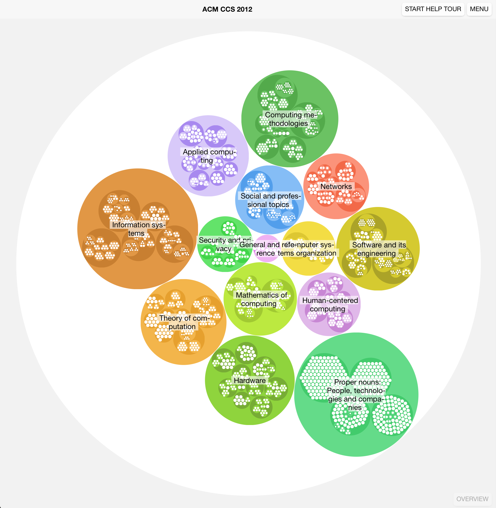

 This is a Web-App that converts a Mind Map Freemind-file into a zoomable Venn-diagram visualization with features like search, a better zooming experience, an online share mechanism and much more.
Simply select the node in which you want to zoom in. Alternatively you can also select the parent node in the path heading or a node in the hierarchy tree list.
It’s mainly based on the awesome d3.js framework. This helps me a lot to visualize the Mind Map. The upload drag-and-drop area is based on dropzone.js. The introductions is made with intro.js.
Look to this demo Mind Map (it’s based on the German cat Wikipedia article): Katzen Mind Map.
I made and used monster-sized, careful crafted and structured Mind Maps for my Bachelor study and liked the way how it helps me to visually structure everything I know (and I have to know). It helps me a lot to remember very special term by deriving its association to more meta-like topics and terms.
But monster Mind Maps always have one issue: nobody but me wants to read them because they’re not good enough to explore them easily. Also it was kind of hard to share the PDF or some kind of Freemind-file. A more scientific reason is that monster-sized Mind Maps are demotivating people to read and explore them. So this is a try to do it a different way.